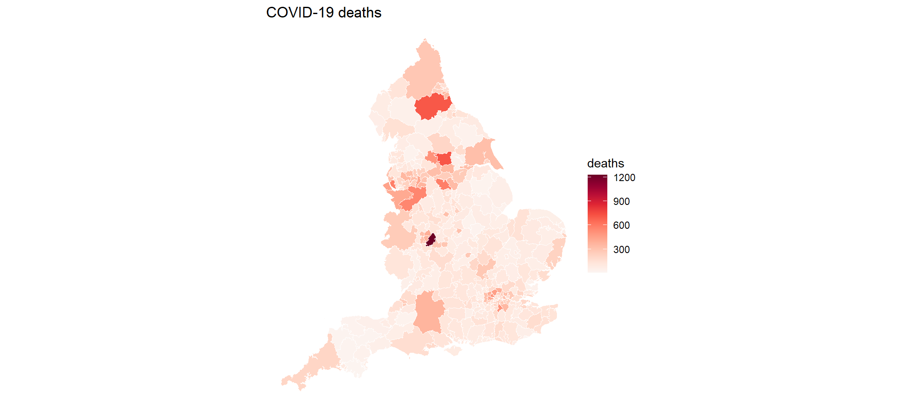
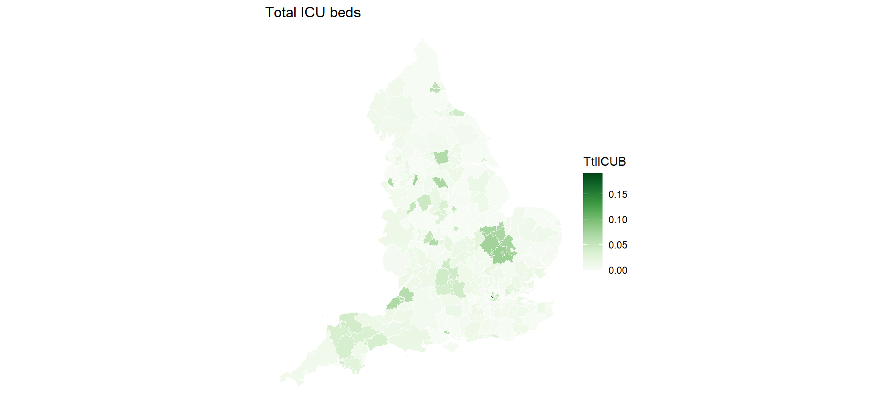
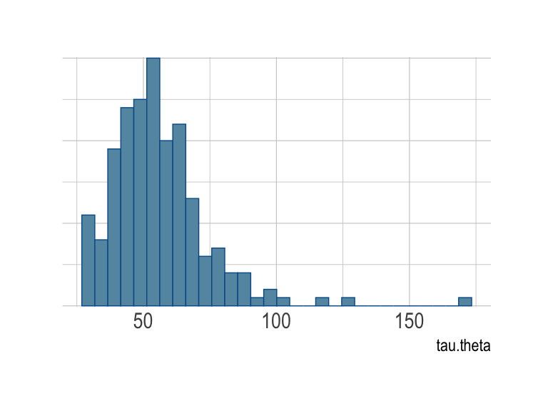
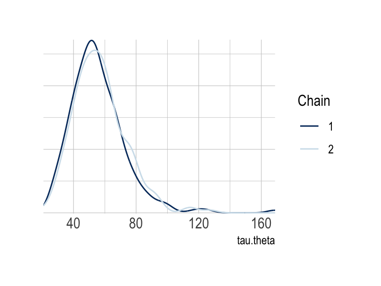
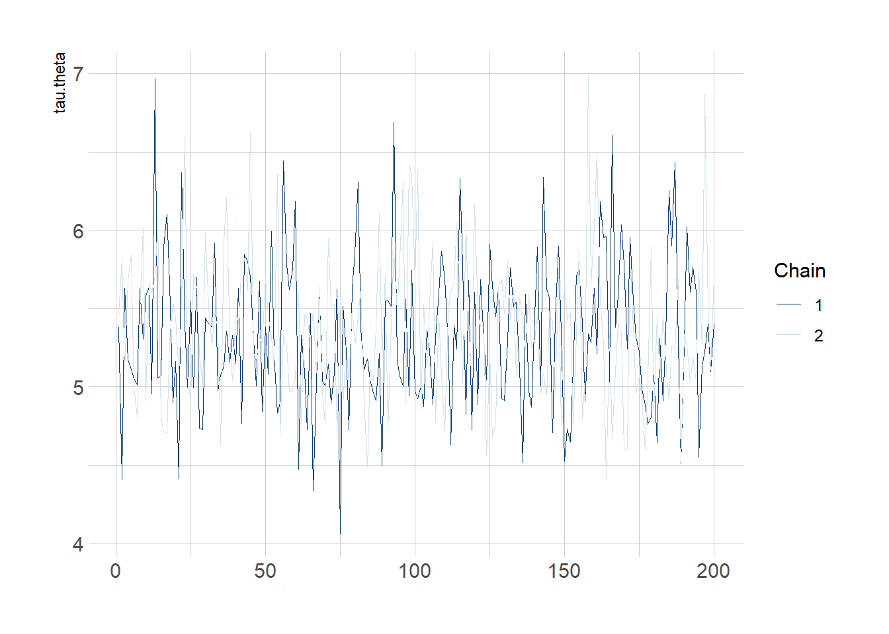
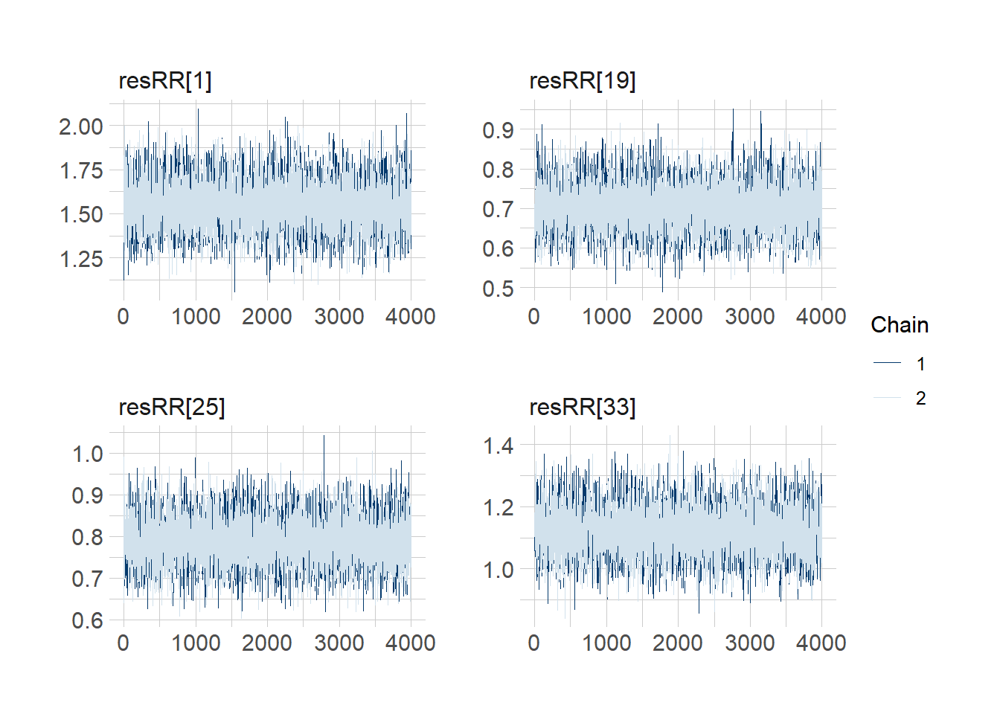

SHARP Bayesian Modeling for Environmental Health Workshop
Author
Garyfallos Konstantinoudis
Published
August 1, 2023
Goal of this computing lab session
This goal of this lab is to use R software Statistical Package (www.r-project.org), as well as NIMBLE to carry out a disease mapping study.
What’s going to happen in this lab session?
During this lab session, we will:
Explore ways of visualizing spatial data;
Define the neighborhood matrix in R;
Fit and interpret the BYM model in NIMBLE; and
Perform spatial ecological regression
Introduction
We will use the COVID-19 deaths during March-July 2020, in England, at the LTLA geographical level (317 areas), as taken from the published paper:
Konstantinoudis G, Padellini T, Bennett J, Davies B, Ezzati M, Blangiardo M. Long-term exposure to air-pollution and COVID-19 mortality in England: a hierarchical spatial analysis. medRxiv [Preprint]. 2020 Aug 11:2020.08.10.20171421. doi: 10.1101/2020.08.10.20171421. Update in: Environ Int. 2021 Jan;146:106316. PMID: 32817974; PMCID: PMC7430619.
For that analysis, we included 38,573 COVID-19 deaths up to June 30, 2020 at the Lower Layer Super Output Area level in England (n=32 844 small areas). We retrieved averaged NO2 and PM2.5 concentration during 2014-2018 from the Pollution Climate Mapping. We used Bayesian hierarchical models to quantify the effect of air-pollution while adjusting for a series of confounding and spatial autocorrelation.
We will build simple Bayesian models to try to understand what is happening in the data. Once again we will use NIMBLE as the basis for our Bayesian model writing.
LTLA deaths expectd TtlICUB
Length:316 Min. : 4.0 Min. : 8.287 Min. :0.000e+00
Class :character 1st Qu.: 77.0 1st Qu.: 99.339 1st Qu.:8.548e-05
Mode :character Median : 117.5 Median :129.067 Median :8.092e-03
Mean : 155.6 Mean :155.630 Mean :1.399e-02
3rd Qu.: 191.2 3rd Qu.:177.896 3rd Qu.:1.460e-02
Max. :1226.0 Max. :903.219 Max. :1.911e-01
NO2 IMD geometry
Min. : 4.48 Min. :1.000 MULTIPOLYGON :316
1st Qu.:11.09 1st Qu.:2.000 epsg:27700 : 0
Median :13.96 Median :3.000 +proj=tmer...: 0
Mean :15.05 Mean :2.997
3rd Qu.:17.26 3rd Qu.:4.000
Max. :46.45 Max. :5.000
class(data_england)
[1] "sf" "tbl_df" "tbl" "data.frame"
The shapefile could be also imported using the function readOGR of the package rgdal (Geospatial Data Abstraction Library), such as data_england <- readOGR(dsn = mypath, layer = "data_england"), where the dsn argument specifies the data source name and mypath is the path where the file is stored. Then to convert sp object to sf object, we can use st_as_sf function, e.g., data_england <- st_as_sf(data_england). This is not encouraged as the rgdal will be deprecated.
We can make nice plots using the package ggplot2, which is very flexible and has lots of options for customising the way we want a plot to look.
First let’s reduce the resolution to get quicker maps. Let’s look at the full map of England and Wales for now, though we will reduce to just London later.
data_england_simpler <-gSimplify(as(data_england, "Spatial"), tol =500)data_england_simpler <-st_as_sf(data_england_simpler)data_england_simpler <-cbind(data_england_simpler, data_england %>%mutate(geometry =NULL))ggplot() +geom_sf(data = data_england_simpler, color ="red", fill ="white") +ggtitle("Map of LTLAs in England") +coord_sf() +# axis limits and CRSlabs(x ="Longitude", y ="Latitude", fill ="") +theme_bw() +# dark-on-light themetheme(axis.title =element_text(size =16),axis.text =element_text(size =14) )

And for nicer maps for the other columns, including COVID-19 deaths, the expected number of deaths, and the SMR:
The relative risks (RRs) will be smoothed using the Poisson model with a log-link function, as we have seen in previous lectures and labs. As usual in this workshop, the inference is done with NIMBLE called through R.
In particular, let each area \(i\) be indexed by the integers \(1, 2,...,N\). The model is as follows: \[
\begin{eqnarray}
O_{i} & \sim & \text{Pois}(\lambda_{i}E_{i} ) \quad i = 1, 2,...,N \\
\log(\lambda_{i}) & = & \alpha + \theta_{i} \\
\theta_{i} & \sim & N(0,\sigma_{\theta})
\end{eqnarray}
\]
where \(\sigma_{\theta}\) is a standard deviation term that controls the magnitude of \(\theta_{i}\).
As in previous labs, we will write the model in NIMBLE. Specify the prior of \(\tau_{\theta}\) in the code below (tau.theta). We can try a Gamma with parameters 1 and 0.01, which is a sensible option for a Poisson count model as it goes from 0 upwards, so can not be negative, like counts:
UnstrCode <-nimbleCode({# priors alpha ~dnorm(0, sd =100000) # vague prior (large variance) tau.theta ~dgamma(1, 0.01) # prior for the precision hyperparameter# likelihoodfor (i in1:N) { O[i] ~dpois(mu[i]) # Poisson likelihoodlog(mu[i]) <-log(E[i]) + alpha + theta[i] theta[i] ~dnorm(0, tau = tau.theta) # area-specific RE RR[i] <-exp(alpha + theta[i]) # area-specific RR }# overall RR across study region overallRR <-exp(alpha)})
The following codesubsets the data to London so the models are quicker to run.
data_england_simpler <- data_england[startsWith(data_england$LTLA, "E09"),]ggplot() +geom_sf(data = data_england_simpler, fill ="NA")

How many spatial units in the London map?
n.LTLA <-nrow(data_england_simpler)n.LTLA
[1] 33
Create data object as required for NIMBLE.
# Obtain the number of LTLAsn.LTLA <-dim(data_england_simpler)[1]# Format the data for NIMBLE in a listCOVIDdata <-list(O = data_england_simpler$deaths # observed nb of deaths)COVIDConsts <-list(N = n.LTLA, # number of LTLAsE = data_england_simpler$expectd # expected number of deaths)
What are the parameters to be initialised? We have seen this stage many times previously. Create a list with two elements and call it inits (each a list) with different initial values for the parameters. Two chains as described in the Bayesian workflow.
Note that specifying samplesAsCodaMCMC = FALSE, the function nimbleMCMC() returns a list object (if codaPkg = TRUE, file names of NIMBLE output are returned for easy access by the coda package).
With more complicated models, sometimes it’s nice to see if the traceplots are working too. Remember there are two chains of samples this time, which should look like they broadly have the same distribution if they have converged.
mcmc_trace(modelGS.sim$samples, pars =c("tau.theta"))

We can use the functions mcmc_acf_bar() and mcmc_acf() to get the autocorrelation plots for the different chains for tau.theta (which should be as near to 0 as possible).
# mcmc_acf_bar(modelGS.sim$samples, pars = c("tau.theta"))mcmc_acf(modelGS.sim$samples, regex_pars =c("tau.theta"))
Warning: The `facets` argument of `facet_grid()` is deprecated as of ggplot2 2.2.0.
ℹ Please use the `rows` argument instead.
ℹ The deprecated feature was likely used in the bayesplot package.
Please report the issue at <https://github.com/stan-dev/bayesplot/issues/>.

Use the functions mcmc_hist() and mcmc_dens() to get the histogram and the density plots of the posterior tau.theta for chain 1.
mcmc_hist(modelGS.sim$samples$chain1, pars =c("tau.theta"))
`stat_bin()` using `bins = 30`. Pick better value with `binwidth`.
# mcmc_dens(modelGS.sim$samples$chain1, pars = c("tau.theta"))
Use the function mcmc_dens_overlay() to get the density plot of the posterior tau.theta for both chains.
mcmc_dens_overlay(modelGS.sim$samples, pars =c("tau.theta"))

To see the WAIC, which can be used to compare to other models to evaluate how well parameterised a model was.
modelGS.sim$WAIC
nimbleList object of type waicNimbleList
Field "WAIC":
[1] 299.1332
Field "lppd":
[1] -132.5673
Field "pWAIC":
[1] 16.99926
Map of the (globally) smoothed RRs
Let’s map the smoothed RRs in R we extract the posterior median of the relative risks
RR <- modelGS.sim$summary$all.chains[paste0("RR[", n.LTLA, "]"), "Median"] # posterior median
Add it on the shapefile
data_england_simpler$RR <- RR
Using ggplot2, we can produce a map of the smoothed RRs
The RRs will be smoothed using the Poisson model and the BYM model in the log-link function. The inference is done with NIMBLE called through R. In particular, let each area \(i\) be indexed by the integers \(1, 2,...,N\). The model is as follows.
where \(\sigma_{\phi}\) is a standard deviation term that controls the magnitude of \(\phi_{i}\), i.e. the spatial structured term.
Run the MCMC simulations calling NIMBLE from R using the function nimbleMCMC()
BYMCode <-nimbleCode({# priors alpha ~dflat() # vague prior (Unif(-inf, +inf)) overallRR <-exp(alpha) # overall RR across study region tau.theta ~dgamma(0.5, 0.05) # prior for the precision hyperparameter sigma2.theta <-1/ tau.theta # variance of unstructured area random effects tau.phi ~dgamma(0.5, 0.0005) # prior on precision of spatial area random effects sigma2.phi <-1/ tau.phi # conditional variance of spatial area random effects# likelihoodfor (i in1:N) { O[i] ~dpois(mu[i]) # Poisson likelihood for observed countslog(mu[i]) <-log(E[i]) + alpha + theta[i] + phi[i] theta[i] ~dnorm(0, tau = tau.theta) # area-specific RE SMR[i] <-exp(alpha + theta[i] + phi[i]) resRR[i] <-exp(theta[i] + phi[i]) # area-specific residual RR proba.resRR[i] <-step(resRR[i] -1) # Posterior probability }# BYM phi[1:N] ~dcar_normal(adj = adj[1:L], weights = weights[1:L], num = num[1:N], tau = tau.phi, zero_mean =1)})
Creating the adjacency matrix
To fit a BYM model, we first need to define an adjacency matrix, which describes which spatial units are actually neighbouring each other. The equation is below, but essentially if the units neighbour, they are given 1 in the relevant adjacency matrix, otherwise the element representing whether two spatial units are neighbouring (sometimes called ‘contiguous’) then it is given a value of 0. Most of the elements in a matrix will be 0 for a real-world situation with lots of spatial units.
To run the BYM model, the adjacency matrix needs to be provided. Recall that there are many ways of defining an adjacency matrix \({\bf W}\). Here we will use queen contiguity which is defined as \[
\begin{equation}
w_{ij} =
\begin{cases}
1 & \text{if } j \in \partial_i \\
0 & \text{otherwise}
\end{cases}
\end{equation}
\]
where \(\partial_i\) is the set of area adjacent to \(i\), and \(w_{ij}\) is the \(ij\) element of \({\bf W}\).
Adjacency matrix in R
Convert the polygons to a list of neighbors using the function poly2nb()
Convert the list you defined previously to NIMBLE format (i.e. a list of 3 components adj, num and weights) using the function nb2WB() and print a summary of the object.
nbWB_A <-nb2WB(nb = LTLA_nb)names(nbWB_A)
[1] "adj" "weights" "num"
A list of three components is created
adj = ID for all the neighbors;
weights = the weight for each neighbour; and
num = total nb of neighbors across the study region
Create data and constants objects as required for NIMBLE.
n.LTLA <-dim(data_england_simpler)[1]# Format the data for NIMBLE in a listCOVIDdata <-list(O = data_england_simpler$deaths # observed nb of deaths)COVIDConsts <-list(N = n.LTLA, # nb of LTLAs# adjacency matrixL =length(nbWB_A$weights), # the number of neighboring areasE = data_england_simpler$expectd, # expected number of deathsadj = nbWB_A$adj, # the elements of the neighbouring matrixnum = nbWB_A$num,weights = nbWB_A$weights)
Define the initial values for ALL the unknown parameters.
# initialise the unknown parameters, 2 chainsinits <-list(list(alpha =0.01,tau.theta =10,tau.phi =1,theta =rep(0.01, times = n.LTLA),phi =c(rep(0.5, times = n.LTLA)) ),list(alpha =0.5,tau.theta =1,tau.phi =0.1,theta =rep(0.05, times = n.LTLA),phi =c(rep(-0.05, times = n.LTLA)) ))
Which model parameters do you want to monitor? Set these before running NIMBLE Call this object parameters_to_monitor.
Running calculate on model
[Note] Any error reports that follow may simply reflect missing values in model variables.
Checking model sizes and dimensions
Checking model calculations
Compiling
[Note] This may take a minute.
[Note] Use 'showCompilerOutput = TRUE' to see C++ compilation details.
running chain 1...
running chain 2...
[Warning] There are 19 individual pWAIC values that are greater than 0.4. This may indicate that the WAIC estimate is unstable (Vehtari et al., 2017), at least in cases without grouping of data nodes or multivariate data nodes.
toc <-Sys.time()toc - tic
Time difference of 16.15292 secs
saveRDS(modelBYM.sim, file ="NIMBLE_BYM_A3")
modelBYM.sim <-readRDS("NIMBLE_BYM_A3")
Retrieve WAIC and compare with previous model. Which model performs best?
modelBYM.sim$WAIC
nimbleList object of type waicNimbleList
Field "WAIC":
[1] 295.918
Field "lppd":
[1] -131.9671
Field "pWAIC":
[1] 15.99192
Check convergence of resRR.
mcmc_trace(modelBYM.sim$samples, pars =c("resRR[1]", "resRR[19]", "resRR[25]", "resRR[33]")) # Theo. not sure it was resRR[1]", "resRR[19]", "resRR[41]", "resRR[72] before it seems random

Extract the residual RR (i.e. exp(V + U)) and the posterior probability that resRR is higher than 1 as. Create a data.frame for this purpose. Note that for the posterior probability, which is a vector of 0s and 1s we need to calculate the sum of 1s by the total sum, ie the mean.
Add a column ID for each LTLA, from 1 to 33, to RR_BYM.
RR_BYM$LTLA <- data_england_simpler$LTLA
Change the name of the column corresponding to the posterior mean to BYM
colnames(RR_BYM) <-c("BYM", "pp_resRR", "LTLA")
Merge RR_BYM with COVID19Deaths using LTLA as column for merging. Call the new object COVID19Deaths.
COVID19Deaths <-left_join(data_england_simpler, RR_BYM, by =c("LTLA"="LTLA"))
Map the smoothed residual RR (resRR). You can use the plot function or the other tools (ggplot or tmap) we used last week. Bonus question. Think of categorizing the continuous BYM column (an example could be quintiles) and plotting the categories.
In this lab session, we have explored how to fit spatial models using Bayesian regression in NIMBLE. We looked at the two most common approaches: iid and the BYM model.
We used real data on COVID-19 deaths in England during March-July 2020 and first performed disease mapping to understand the spatial trends of COVID-19 mortality in the first stages of the pandemic. As part of this analysis, we visualised spatial data, fitted a model with an unstructured spatial random effect, demonstrated how to build a neihgborhood matrix in R and fitted the BYM model.
For more information on the final model see Konstantinoudis et al 2021 (10.1016/j.envint.2020.106316).
Advanced: Ecological regression with the BYM model
The section below is very relevant for environmental health, but if we run out of time in the lab, it is something you should go through in your own time.
Let \(\mathcal{D}\) be the observation window of England and \(A_1, A_2, \dots, A_N\) a partition denoting the LTLAs in England with \(\cup_{i=1}^NA_i = \mathcal{D}\) and \(A_i\cap A_j\) for every \(i\neq j\). Let \(O_1, O_2, \dots, O_N\) be the observed number of COVID-19 deaths occurred during March-July 2020 in England, \(E_1, E_2, \dots, E_N\) is the expected number of COVID-19 deaths and \(\lambda_1, \lambda_2, \dots, \lambda_N\) the standardized mortality ratio (recall \(\lambda_i = \frac{O_i}{E_i}\)). A standardized mortality ratio of \(1.5\) implies that the COVID-19 deaths we observed in the \(i\)-th area are \(1.5\) times higher to what we expected. Under the Poisson assumption we have: \[
\begin{equation}
\begin{aligned}
\hbox{O}_i & \sim \hbox{Poisson}(E_i \lambda_i); \;\;\; i=1,...,N\\
\log \lambda_i & = \alpha + \beta_1 X_{1i} + \beta_2 X_{2i} + \theta_i + \phi_i\\
\theta_i &\sim \hbox{Normal}(0, \sigma^2_{\theta_i})\\
{\bf \phi} & \sim \hbox{ICAR}({\bf W}, \sigma_{\phi}^2) \,\, , \sum_i \phi_i = 0 \\
\alpha & \sim \text{Uniform}(-\infty, +\infty) \\
\beta_1, \beta_2 & \sim \mathcal{N}(0, 10) \\
1/\sigma_{\theta}^2 & \sim \hbox{Gamma}(0.5, 0.05) \\
1/\sigma_{\phi}^2 & \sim \hbox{Gamma}(0.5, 0.0005) \\
\end{aligned}
\end{equation}
\]
the terms \(\beta_1 X_{1i} + \beta_2 X_{2i} + \sum_{j=2}^5\beta_{3j} X_{3i}\), where \(X_{1i}, X_{2i}, X_{3i}\) are the ICU beds, NO\(_2\) and IMD in the \(i\)-th LTLA, \(\beta_1, \beta_2, \sum_{j=2}^5\beta_{3j}\) the corresponding effects and \(exp(\beta_1), exp(\beta_2)\) the relative risk of ICU beds or NO\(_2\) for every unit increase and of the ICU beds or NO\(_2\). For instance \(exp(\beta_2) = 1.8\) means that for every unit increase of long term exposure to \(NO_2\), the risk (read standardized mortality ratio) of COVID-19 deaths cancer increases by \(80\%\). \(exp(\beta_{32}), \beta_{33}, \beta_{34}, \beta_{35}\) are the relative risks compared to the baseline IMD category, ie the most deprived areas. An \(exp(\beta_{35}) = 0.5\) means that the risk of COVID-19 deaths in most affluent areas decreases by \(50%\) compared to the most deprived areas.\(\tau_{\theta}\) is a precision (reciprocal of the variance) term that controls the magnitude of \(\theta_{i}\). We will first write the model in NIMBLE.
BYMecoCode <-nimbleCode({# priors alpha ~dflat() # vague prior (Unif(-inf, +inf)) overallRR <-exp(alpha) # overall RR across study region tau.theta ~dgamma(0.5, 0.05) # prior for the precision hyperparameter sigma2.theta <-1/ tau.theta # variance of unstructured area random effects tau.phi ~dgamma(0.5, 0.0005) # prior on precison of spatial area random effects sigma2.phi <-1/ tau.phi # conditional variance of spatial area random effects# priors for the fixed effects beta1 ~dnorm(0, tau =0.01) RR.beta1 <-exp(beta1) beta2 ~dnorm(0, tau =0.01) RR.beta2 <-exp(beta2)# likelihoodfor (i in1:N) { O[i] ~dpois(mu[i]) # Poisson likelihood for observed countslog(mu[i]) <-log(E[i]) + alpha + theta[i] + phi[i] + beta1 * X1[i] + beta2 * X2[i] SMR[i] <- alpha + theta[i] + phi[i] + beta1 * X1[i] + beta2 * X2[i] theta[i] ~dnorm(0, tau = tau.theta) # area-specific RE resRR[i] <-exp(theta[i] + phi[i]) # area-specific residual RR proba.resRR[i] <-step(resRR[i] -1) # Posterior probability }# BYM prior phi[1:N] ~dcar_normal(adj = adj[1:L], weights = weights[1:L], num = num[1:N], tau = tau.phi, zero_mean =1)})
Create data object as required for NIMBLE
n.LTLA <-dim(data_england_simpler)[1]# Format the data for NIMBLE in a listCOVIDdata <-list(O = data_england_simpler$deaths, # observed nb of deaths# covariatesX1 =scale(data_england_simpler$TtlICUB)[, 1], # ICU bedsX2 = data_england_simpler$NO2 # NO2)COVIDConsts <-list(N = n.LTLA, # nb of LTLAs# adjacency matrixL =length(nbWB_A$weights), # the number of neighboring areasE = data_england_simpler$expectd, # expected number of deathsadj = nbWB_A$adj, # the elements of the neighbouring matrixnum = nbWB_A$num,weights = nbWB_A$weights)
Create the initial values for ALL the unknown parameters:
# initialise the unknown parameters, 2 chainsinits <-list(list(alpha =0.01,beta1 =0,beta2 =0,tau.theta =10,tau.phi =1,theta =rep(0.01, times = n.LTLA),phi =c(rep(0.5, times = n.LTLA)) ),list(alpha =0.5,beta1 =-1,beta2 =-1,tau.theta =1,tau.phi =0.1,theta =rep(0.05, times = n.LTLA),phi =c(rep(-0.05, times = n.LTLA)) ))
Which model parameters do you want to monitor? Set these before running NIMBLE Call this object parameters_to_monitor.
ni <-50000# nb iterationsnt <-10# thinning intervalnb <-10000# nb iterations as burningnc <-2# nb chains
Run the MCMC simulations calling NIMBLE from R using the function nimbleMCMC(). If everything is specified reasonably, this needs approximately 5 minutes.
If you got through the advanced portion, we examined the effect of long term exposure to NO\(_2\) on COVID-19 mortality. We fitted a BYM model to account for unknown spatial confounding but in addition we accounted for total number of ICU beds per LTLA. We reported evidence of an increased COVID-19 mortality for increasing levels of NO\(_2\).